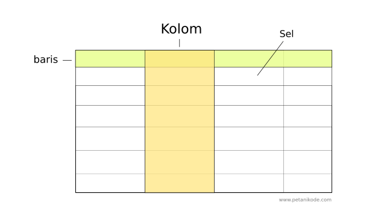
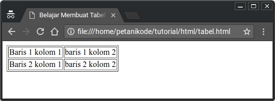
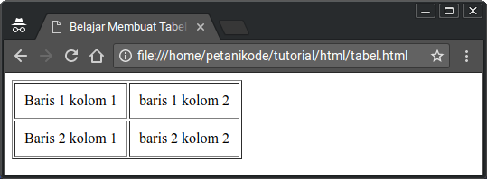
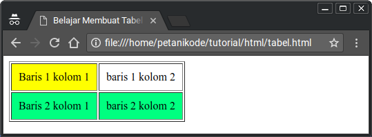
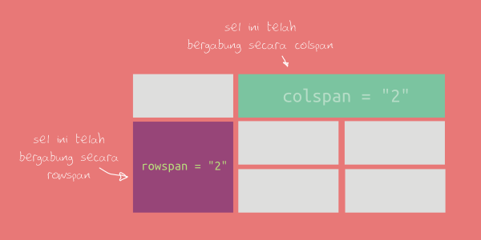
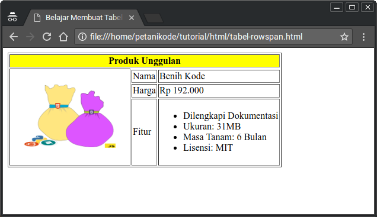

Salah satu cara atau format menampilkan informasi dalam web adalah dengan tabel.
Tabel terdiri dari 4 unsur utama:
- Baris
- Kolom
- Sel
- Garis

1. Tag Untuk Membuat Tabel di HTML
Ada beberapa tag yang harus diingat untuk membuat tabel di HTML:
- Tag
<table>untuk membungkus tabelnya - Tag
<thead>untuk membungkus bagian kepala tabel - Tag
<tbody>untuk membungkus bagian body dari tabel - Tag
<tr>(tabel row) untuk membuat baris - Tag
<td>(table data) untuk membuat sel - Tag
<th>(table head) untuk membuat judul pada header
Tag yang paling penting untuk diingat adalah tag <table>, <tr>, dan <td>. Sementara tag yang lain adalah tambahan (opsional), boleh digunakan boleh tidak.
Mari kita lihat contohnya:
<!DOCTYPE html>
<html lang="en">
<head>
<title>Belajar Membuat Tabel HTML</title>
</head>
<body>
<table border="1">
<tr>
<td>Baris 1 kolom 1</td>
<td>Baris 1 kolom 2</td>
</tr>
<tr>
<td>Baris 2 kolom 1</td>
<td>Baris 2 kolom 2</td>
</tr>
</table>
</body>
</html>
Hasilnya:

Nilai "1" pada atribut border adalah ukuran garisnya. Semakin besar ukurannya, maka akan semakin besar pula ukuran garisnya.
Nilai "1" adalah ukuran garis yang paling kecil.
2. Mengatur Jarak Sel dengan Cellpadding
Atribut cellpadding adalah atribut untuk mengatur jarak teks dengan garis di dalam sel.
Atribut ini dapat kita berikan kepada tag <table>.
Contoh:
<table border="1">
<tr>
<td>Baris 1 kolom 1</td>
<td>Baris 1 kolom 2</td>
</tr>
<tr>
<td>Baris 2 kolom 1</td>
<td>Baris 2 kolom 2</td>
</tr>
</table>
Nilai "10" pada atribut cellpadding adalah ukuran jarak antara teks sel dengan garis.
Maka Hasilnya:

3. Menambahkan Warna pada Sel dan Baris
Untuk menambahkan warna pada sel dan baris, kita bisa menambahkan atribut bgcolor di dalam tag <td> (untuk sel) atau <tr> (untuk baris).
Contoh:
<table border="1" cellpadding="10">
<tr>
<td bgcolor="yellow">Baris 1 kolom 1</td>
<td>Baris 1 kolom 2</td>
</tr>
<tr bgcolor="#00ff80">
<td>Baris 2 kolom 1</td>
<td>Baris 2 kolom 2</td>
</tr>
</table>
Nilai atribut bgcolor bisa kita isi dengan kode warna dalam heksadesimal atau nama warna dalam bahasa inggris.
Maka hasilnya akan seperti ini:

4. Menggabungkan Sel Tabel
Atribut yang digunakan untuk menggabungkan sel tabel adalah rowspan dan colspan:
rowspanuntuk menggabungkan baris.colspanuntuk menggabungkan kolom.
Atribut ini bisa kita berikan kepada tag <td> atau <th>.

Mari kita lihat contohnya:
<!DOCTYPE html>
<html lang="en">
<head>
<title>Belajar Membuat Tabel HTML</title>
</head>
<body>
<table border="1">
<tr>
<th colspan="3" bgcolor="yellow">Produk Unggulan</th>
</tr>
<tr>
<td rowspan="4">
<img src="https://www.petanikode.com/img/bibit.png" width="200"/>
</td>
</tr>
<tr>
<td>Nama</td>
<td>Benih Kode</td>
</tr>
<tr>
<td>Harga</td>
<td>Rp 192.000</td>
</tr>
<tr>
<td>Fitur</td>
<td>
<ul>
<li>Dilengkapi Dokumentasi</li>
<li>Ukuran: 31MB</li>
<li>Masa Tanam: 6 Bulan</li>
<li>Lisensi: MIT</li>
<ul>
<td>
</tr>
</table>
</body>
</html>
Hasilnya:
